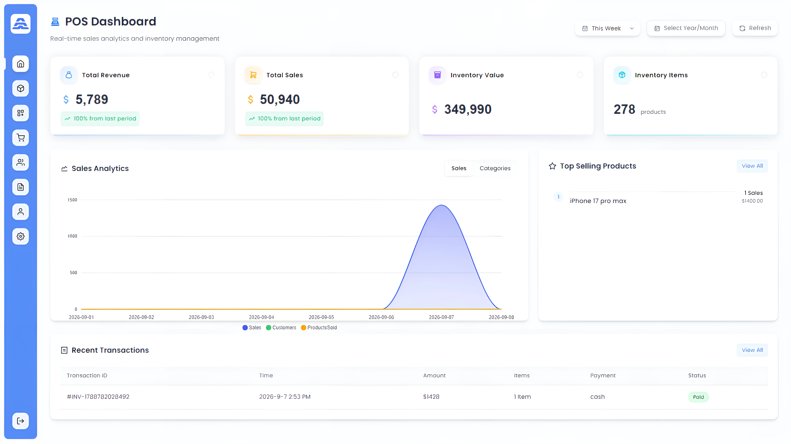

Building
Software.
Engineering
Systems.
Control & Computer Engineering student focused on industrial automation while building software systems and digital products.
What I can
build today.
Software systems, web applications, digital products, APIs, databases, and business logic — built end-to-end.
“These technologies allow me to build complete systems from database to interface — not just individual components.”
What I'm
building toward.
An engineering student actively progressing through the control systems specialization path.
What I Build
Four areas of capability — two grounded in today's software practice, two aimed at tomorrow's engineering systems.
Digital Products
Interfaces and applications designed around real users and real workflows. From interaction design to production deployment.
Software Systems
Frontend, backend, APIs, databases, business logic and system architecture built as coherent, maintainable systems.
Intelligent Systems
AI-assisted software and computer-vision/hardware projects that connect digital processing to physical sensing.
Engineering Systems
Electrical, control and automation foundations — progressing toward industrial PLC, SCADA and process control.
Hyper System
A complete business management platform with POS, inventory, invoicing, and payment tracking — built for offline-first operation.
Small businesses needed an offline-capable POS with full inventory, invoicing, and payment tracking.
React SPA + Node.js/Express backend + SQLite for offline-first operation with local database management.
Barcode scanning, cart system, invoice generation, sales history, product management, and dashboard analytics.
A complete, deployable business management system that works without internet connectivity.

Hyper System POS – offline-first business management
AI Object Detection + Arduino
Computer vision pipeline connected to Arduino hardware — bridging machine perception with physical actuation.
Android / Firebase Projects
Native Android applications with Firebase backend — real-time data, authentication, and cloud storage.
Engineering Simulation Projects
Electrical and control system designs involving transformers, PV systems, motor control and protection circuits.
The Path
Forward.
Engineering is not a destination. This is an active progression through the control systems specialization — tracking exactly where I am and where I am going.
Electrical Foundations
Circuit theory, components, AC/DC systems
Measurements & Instrumentation
Sensors, transducers, signal conditioning
Classic Control Theory
PID, Laplace, Bode diagrams, system stability
PLC Programming
Ladder logic, function blocks, TIA Portal — in progress
HMI Design
Human-machine interface development and visualization
SCADA Systems
Supervisory control and data acquisition architecture
Industrial Communication
Profibus, Profinet, Modbus, OPC-UA protocols
Industrial Automation
Complete process automation and system integration
How I Think.
Engineering is a disciplined process. Not a sequence of guesses — a structured method applied consistently.
Understand
Grasp the problem space before touching code.
Analyze
Break the problem into its components.
Plan
Define architecture and approach.
Design
Structure the solution system.
Build
Implement with precision.
Test
Validate against requirements.
Debug
Isolate and resolve failures.
Improve
Refine, optimize, iterate.
This is not a waterfall — it is a loop. At any point the analysis reveals a wrong assumption, the process returns to the beginning. Engineering judgment means knowing when to iterate, when to pivot, and when the current solution is good enough to ship.
AI is a force
multiplier.
Not the engineer.
AI is part of the development workflow — used heavily to accelerate implementation, exploration, and debugging. But the engineering stays human.
The combination is faster than either alone.
An engineer who builds
software today and controls
physical systems tomorrow.
Control and Computer Engineering student with a clear direction: build software systems now, master industrial automation next.
The two sides are not separate careers. They are the same engineering mind operating at different layers of the physical world — from a React interface to a PLC controlling a motor.
Software is the domain of today's work. Automation is where the engineering path leads.
Currently Building
Toward Automation.
Not claiming expertise. Actively progressing through the industrial control systems path — one studied discipline at a time.
Let's Build
Something
That Works.
Open to projects, collaborations, and engineering conversations. No fake claims, no inflated titles — just honest work.